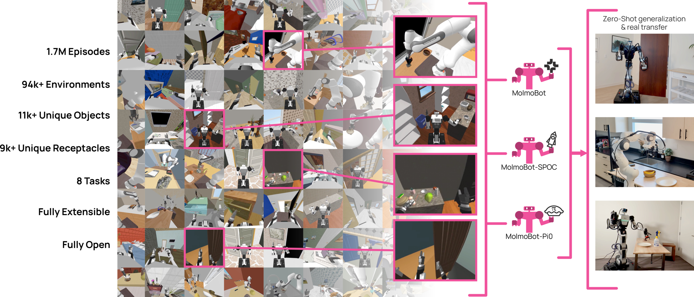

Abstract
A prevailing view in robot learning is that simulation alone is not enough; effective sim-to-real transfer is widely believed to require at least some real-world data collection or task-specific fine-tuning to bridge the gap between simulated and physical environments. We challenge that assumption. With sufficiently large-scale and diverse simulated synthetic training data, we show that zero-shot transfer to the real world is not only possible, but effective for both static and mobile manipulation.
We introduce MolmoBot-Engine, a fully open-source pipeline for procedural data generation across robots, tasks, and diverse simulated environments in MolmoSpaces. With it, we release MolmoBot-Data, a dataset of 1.8 million expert trajectories for articulated object manipulation and pick-and-place tasks. We train three policy classes: MolmoBot (a Molmo2-based VLM with a flow-matching action head), MolmoBot-Pi0 (replicating the π₀ architecture for controlled comparison), and MolmoBot-SPOC (a lightweight policy for edge deployment). Without any real-world fine-tuning, our policies achieve zero-shot transfer to unseen objects and environments, reaching 79.2% success rate on real-world tabletop pick-and-place, outperforming π₀.₅ at 39.2%.
Video Demos
Zero-Shot Sim-to-Real Transfer

Generating Data at Scale
MolmoBot-Engine is an open-source procedural data generation pipeline built on MolmoSpaces, a photorealistic simulation platform with 94,000+ indoor environments. It automatically generates expert trajectories via task-and-motion planning with aggressive randomization of objects, lighting, and camera poses — producing MolmoBot-Data, 1.8M demonstrations totaling 5,800+ hours of robot experience across 8 task types.
MolmoBot-Engine procedurally generates diverse pick-and-place demonstrations across thousands of simulated environments. Randomization of object placement, lighting, and camera pose drives the sim-to-real transfer capability of the resulting policies.
DROID Real-World Performance
We evaluate our policies zero-shot on a real DROID robot across four distinct environments — Workroom, Kitchen, Bedroom, and Office — covering 40 pick-and-place tasks with varied objects and receptacles (120 episodes total). No real-world data or task-specific fine-tuning is used. MolmoBot (F=2) achieves 79.2% overall success, more than doubling the performance of π₀.₅-DROID (39.2%), a strong baseline trained on large-scale real-world demonstrations.
DROID Real-World Results by Environment
Each cell shows successes out of 3 trials. Click any cell to watch the recordings for that policy & task.
Workroom
| Policy | Spoon Tray | Spoon Box | Tape Tray | Tape Box | Blue Mug Tray | Blue Mug Box | Copper Mug Tray | Copper Mug Box | Timer Tray | Timer Box | Avg |
|---|---|---|---|---|---|---|---|---|---|---|---|
| MolmoBot | 3/3 | 2/3 | 3/3 | 3/3 | 3/3 | 3/3 | 3/3 | 1/3 | 3/3 | 3/3 | 90% |
| MolmoBot-Img | 3/3 | 3/3 | 3/3 | 3/3 | 3/3 | 2/3 | 2/3 | 0/3 | 3/3 | 1/3 | 77% |
| MolmoBot-Pi0 | 1/3 | 0/3 | 3/3 | 3/3 | 3/3 | 3/3 | 2/3 | 1/3 | 0/3 | 2/3 | 60% |
| π₀.₅ | 2/3 | 2/3 | 2/3 | 0/3 | 1/3 | 1/3 | 0/3 | 0/3 | 0/3 | 0/3 | 27% |
| π₀ | 0/3 | 0/3 | 1/3 | 0/3 | 0/3 | 0/3 | 0/3 | 0/3 | 0/3 | 0/3 | 3% |
Kitchen
| Policy | Apple Easy | Apple Hard | Mug Easy | Mug Hard | Banana Easy | Banana Hard | Mouse Easy | Mouse Hard | Clutter Brown | Clutter Black | Avg |
|---|---|---|---|---|---|---|---|---|---|---|---|
| MolmoBot | 1/3 | 2/3 | 3/3 | 3/3 | 3/3 | 3/3 | 3/3 | 3/3 | 0/3 | 0/3 | 70% |
| MolmoBot-Img | 3/3 | 3/3 | 2/3 | 3/3 | 3/3 | 3/3 | 3/3 | 2/3 | 3/3 | 1/3 | 87% |
| MolmoBot-Pi0 | 2/3 | 3/3 | 2/3 | 0/3 | 3/3 | 1/3 | 3/3 | 2/3 | 0/3 | 0/3 | 53% |
| π₀.₅ | 3/3 | 0/3 | 2/3 | 1/3 | 3/3 | 2/3 | 3/3 | 1/3 | 2/3 | 2/3 | 63% |
| π₀ | 0/3 | 1/3 | 0/3 | 0/3 | 1/3 | 0/3 | 3/3 | 1/3 | 0/3 | 0/3 | 20% |
Bedroom
| Policy | Pills Towel | Pills Basket | Roller Towel | Roller Basket | Banana Towel | Banana Basket | Ball Towel | Ball Basket | Clutter Towel | Clutter Basket | Avg |
|---|---|---|---|---|---|---|---|---|---|---|---|
| MolmoBot | 3/3 | 3/3 | 3/3 | 0/3 | 3/3 | 2/3 | 3/3 | 3/3 | 3/3 | 3/3 | 87% |
| MolmoBot-Img | 0/3 | 0/3 | 1/3 | 2/3 | 3/3 | 3/3 | 3/3 | 2/3 | 3/3 | 3/3 | 67% |
| MolmoBot-Pi0 | 2/3 | 0/3 | 2/3 | 0/3 | 0/3 | 0/3 | 1/3 | 0/3 | 0/3 | 2/3 | 23% |
| π₀.₅ | 0/3 | 0/3 | 0/3 | 0/3 | 1/3 | 0/3 | 0/3 | 0/3 | 2/3 | 0/3 | 10% |
| π₀ | 0/3 | 0/3 | 0/3 | 0/3 | 0/3 | 0/3 | 0/3 | 0/3 | 0/3 | 0/3 | 0% |
Office
| Policy | Knife Board | Banana Plate | Marker Mug | Scissors Bowl | Carrot Basket | Knife Green Bowl | Screwdriver Blue Bowl | Mouse Blue Bowl | Mug Bowl | Marker Box | Avg |
|---|---|---|---|---|---|---|---|---|---|---|---|
| MolmoBot | 2/3 | 3/3 | 1/3 | 2/3 | 2/3 | 2/3 | 3/3 | 2/3 | 3/3 | 1/3 | 70% |
| MolmoBot-Img | 2/3 | 1/3 | 0/3 | 1/3 | 3/3 | 1/3 | 3/3 | 2/3 | 3/3 | 2/3 | 60% |
| MolmoBot-Pi0 | 1/3 | 3/3 | 0/3 | 0/3 | 0/3 | 1/3 | 3/3 | 2/3 | 3/3 | 2/3 | 50% |
| π₀.₅ | 2/3 | 3/3 | 1/3 | 1/3 | 1/3 | 1/3 | 2/3 | 1/3 | 3/3 | 2/3 | 57% |
| π₀ | 0/3 | 0/3 | 0/3 | 0/3 | 1/3 | 1/3 | 1/3 | 1/3 | 0/3 | 0/3 | 13% |
Pink rows are our models. Click any cell to watch the episode recordings.
DROID Simulation Results
Evaluation on held-out simulation environments. Success rates over 200 episodes per task (Pick MSProc: 1000 episodes). All models evaluated zero-shot without any task-specific fine-tuning.
| Model | Pick MSProc | Pick Classic | Pick | Pick Rand-Cam | Pick&Place | PnP Next-To | PnP Color | Avg. |
|---|---|---|---|---|---|---|---|---|
| π₀.₅ | 36.4 | 9.3 | 14.0 | 12.8 | 20.0 | 35.5 | 16.2 | 20.6 |
| π₀.₅-Finetune | 47.0 | 20.5 | 24.0 | 28.5 | 46.0 | 36.9 | 53.0 | 36.6 |
| StereoVLA | 6.3 | 4.3 | 1.1 | N/A | 0 | 0 | 0 | — |
| LAP-VLA | 12.6 | 0.5 | 0.5 | 0 | 2.2 | 10.1 | 0 | 3.7 |
| X-VLA | 6.0 | 5.8 | 0.9 | 0.2 | 0 | 0 | 0 | 1.8 |
| MolmoBot-Pi0 | 65.5 | 30.5 | 32.0 | 36.0 | 41.5 | 41.8 | 42.5 | 41.4 |
| MolmoBot-Img | 92.8 | 67.0 | 63.0 | 62.5 | 67.0 | 47.5 | 65.0 | 66.4 |
| MolmoBot (F=2) | 92.0 | 63.0 | 66.0 | 61.0 | 60.0 | 55.0 | 68.0 | 66.4 |
| MolmoBot (F=3) | 91.9 | 61.0 | 63.5 | 60.0 | 62.5 | 46.5 | 65.5 | 64.4 |
Pink rows are our models. Bold values are best per column. MolmoBot variants substantially outperform all baselines, with MolmoBot-Img and MolmoBot (F=2) both achieving 66.4% average vs. 36.6% for the strongest baseline (π₀.₅-Finetune).
RB-Y1 Simulation Results
Zero-shot simulation evaluation for RB-Y1 policies on held-out environments.
| Model | Pick | Pick & Place | Open | Door Open |
|---|---|---|---|---|
| MolmoBot Multitask | 44.8% | 22.5% | 25.2% | 70.2% |
| MolmoBot Door Specialist | — | — | — | 77.7% |
| MolmoBot-SPOC Rigid | 10.5% | 1.8% | — | — |
| MolmoBot-SPOC Articulated | — | — | 21.8% | 58.8% |
MolmoBot Multitask outperforms MolmoBot-SPOC across all shared tasks. The MolmoBot Door Specialist achieves 77.7% zero-shot door-opening success in simulation.